AURA: ecos de r-evolução
Projecto de Design de Comnicação IV
AURA: ecos de r-evolução Magazine parte da Luta pelos Direitos Civis dos Afro-Americanos durante os anos 60 e 70, para explorar o modo como a música, quer neste período, quer na actualidade, consegue alertar o público para as problemáticas raciais existentes na sociedade. Este número 1, que inclui diferentes objectos, dedica-se à música americana dos anos 60 e atual e ao hip-hop português contemporâneo.
Foi também realizada uma instalação complementar com o objectivo de colocar o espectador frente a frente com as problemáticas raciais actualmente na América, através de conteúdos tão insignificantes e efémeros e ao mesmo tempo tão opressivos.
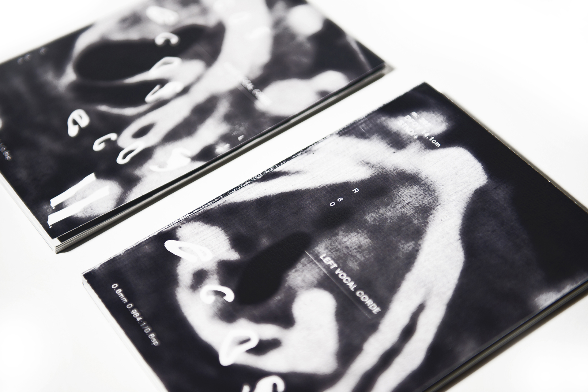
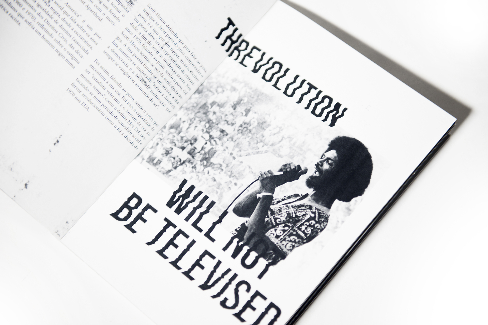

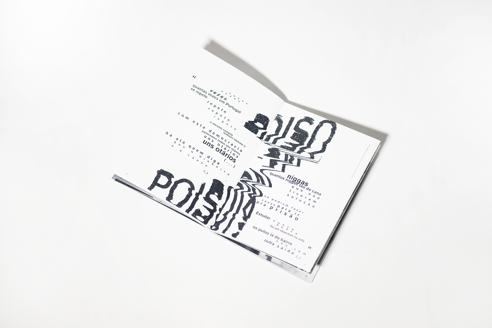
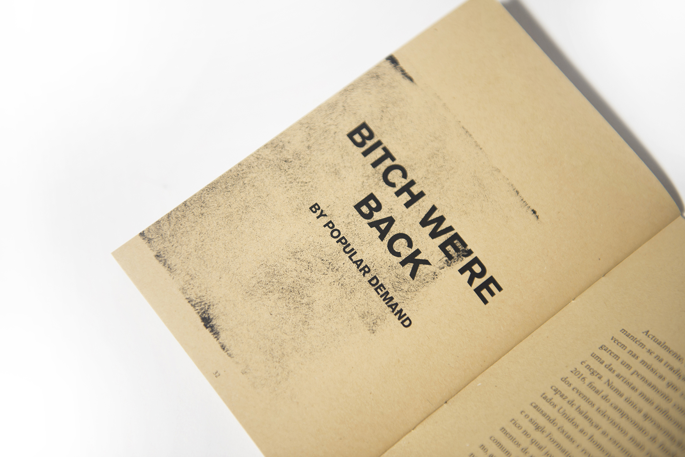
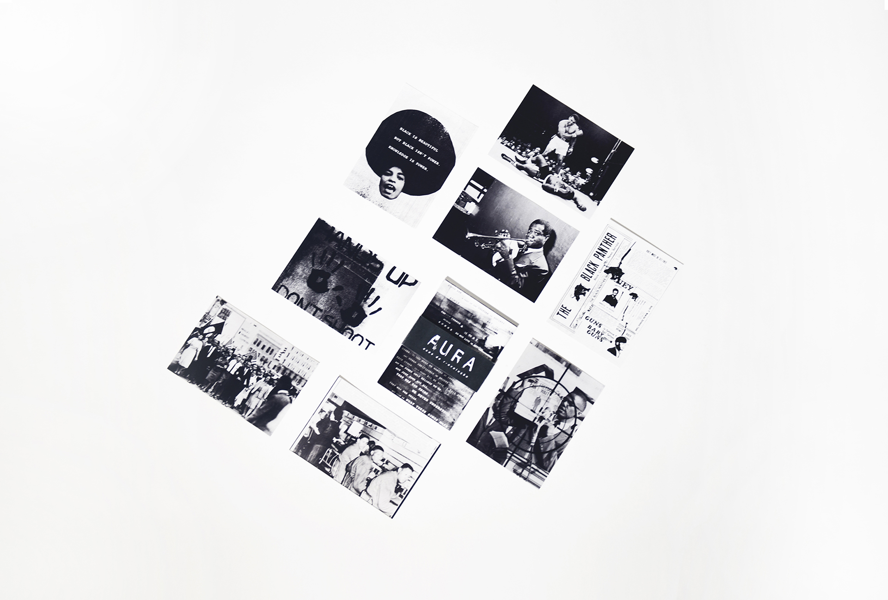
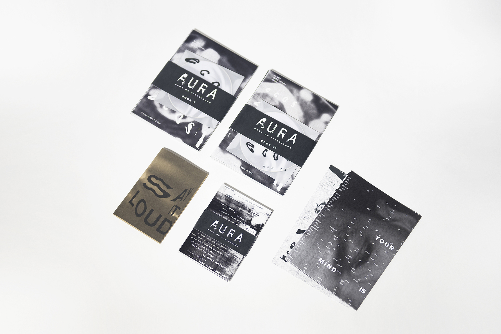
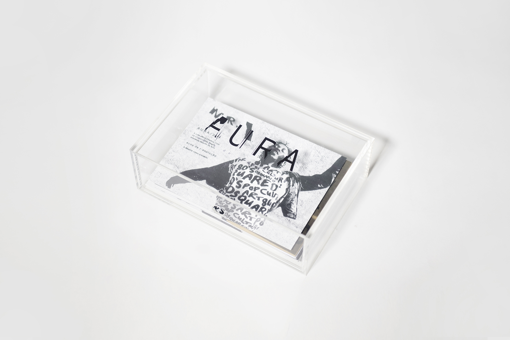
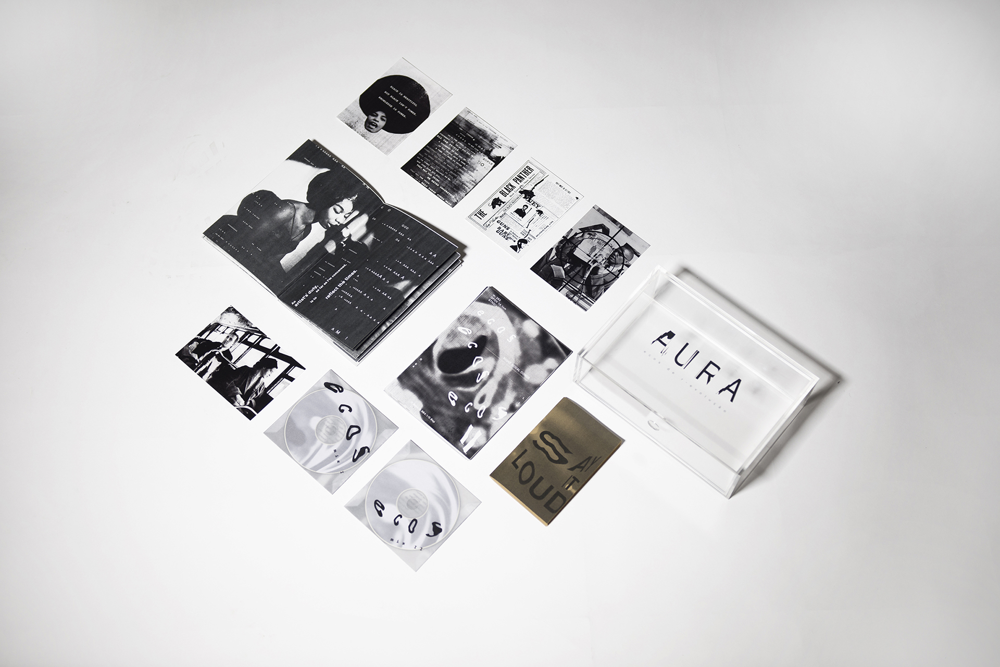
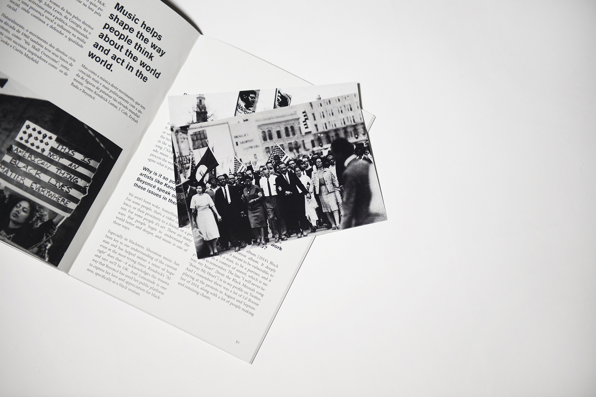
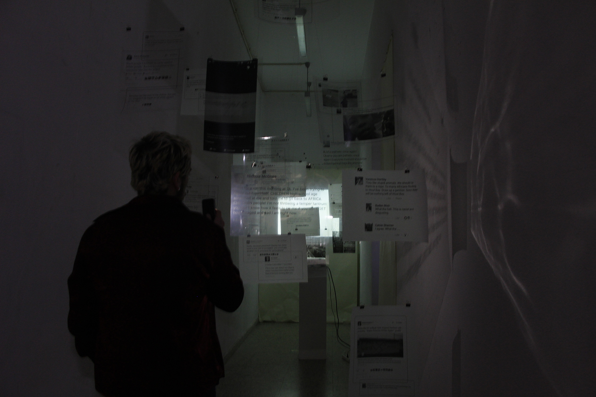
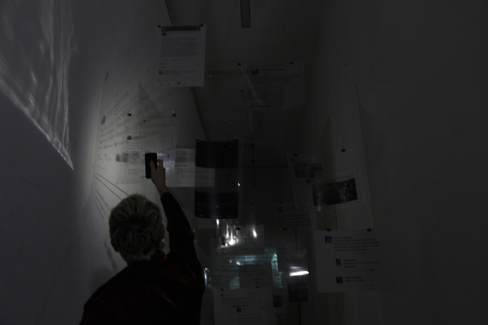
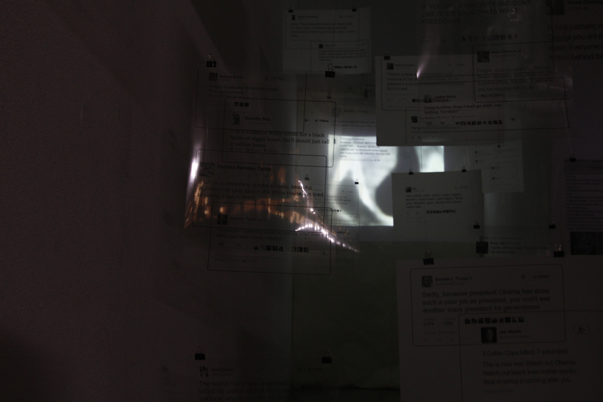
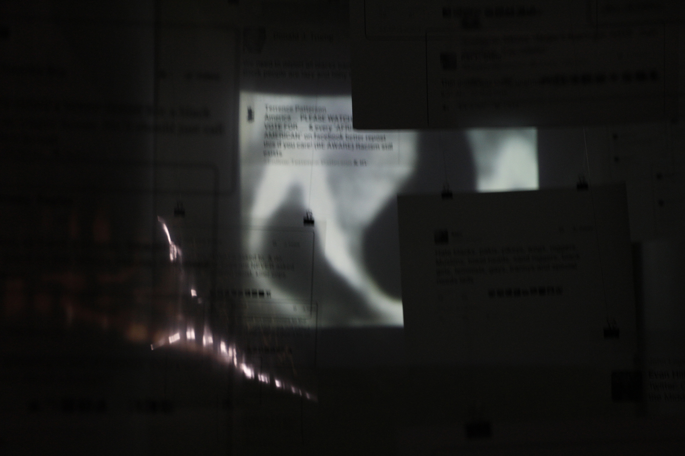
❮
❯